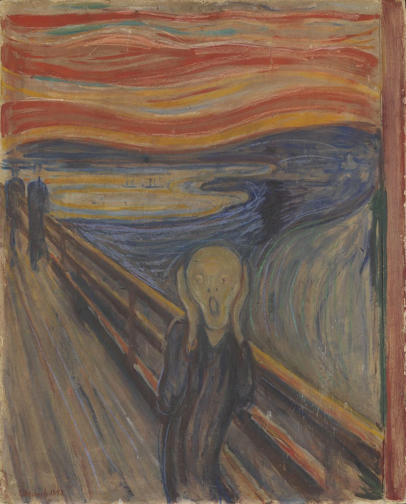

The Scream

Palette
- Raw umber · your word: Sepia
- Davy's grey · your word: Umber
- Taupe · your word: Taupe
- Sepia · your word: Sepia
- Granite gray · your word: Charcoal
- Chestnut · your word: Sienna
- Café au lait · your word: Sepia
Tempera and wax crayon on cardboard, so fragile that the museum keeps its light low. Munch wrote that as the sun set, the sky suddenly turned blood red. In this palette that red is a rust brown, set against the blue-black of the fjord: a warm and cool clash. The fading yellows reported in the news belong to a later version at the Munch Museum, not this one.
Image
Wikimedia Commons · Public domain

Hex values are screen approximations. Every page lists its sources.